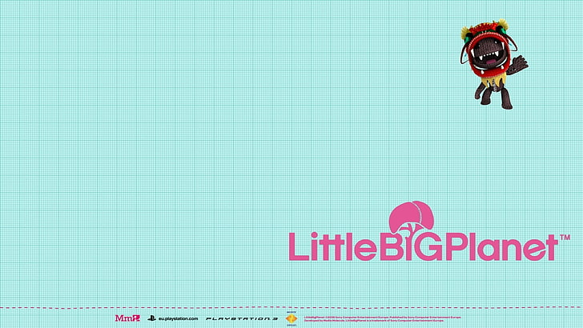

Little Big Planet
What is Little Big Planet?
Little Big Planet is franchise of games, the first game was created in 2008 by Media Molucule. The game was released with the ps3 and quickly became one of the top games on the console. Little Big Planet also known as LBP is a platforming game where the player control a customizable sack person that goes on random adventures to save the "imagisphere". The game has 3 diffrent catagories of play; community, create, and story.
Community
Community was where anyone any where could play anything created by another user, some users created movies, others created levels and some players made music, by 2024 10 million level were created by users. User generated content was by far the biggest focal point for most players. User generated levels meant there was infinity replayability and it allowed players to get to know each other
Create
In little big planet there was a place called "your moon" in your moon you were able to create anything you wanted using the tools at your disposale and then publish it for players from across the world to play and comment about. A players moon was their profolio, a man had a players published levels and their drafts.
Story
The story of the first little Big Planet was 23 levels long and created by the developers of the game and was released with the launch of the game. it was mainly focused around platforming and collecting as many bubbles as you could, The game had bonus goals for after playing through the entire story, like trying to complete each level without dying or completing each level and getting every prize bubble. by doing these extra challenges players would be rewarded with extra material used to create appearances of the sack person or materials used to create levels on their moon.
The downfall of Little Big Planet
In April of 2024 Media Molucules parent company Sony unplugged little big planet servers with no warning to its players, 10 million levels published over 15 years were gone with in a second the community had been told that they unplugged the servers to the game because they were hacked and they didnt see the value of putting in the effort to fix it. as of today there has been no news of little big planet coming back, some community memebers have been trying to create a knock off for little big planet but no real time line of the games release has been revealed. With sony getting a new mascot found in astro bot, sack boy and the little big planet group has been forgoten and left to rot.
| LBP 1 | LBP 2 | LBP 3 | |
|---|---|---|---|
| Number of story levels | 23 | 50 | 46 |
| Copies sold by 2019 | 4.5 million | 3.43 million | 5.4 million |
| Release date | 2008 | 2011 | 2014 |
Creators of LBP
Media Molucule
Media Molucle is a British video game company created in 2006 by four guys Kareem Ettouney, Alex Evans, Mark Healey, David Smith. They were accuired by Sony in 2010, they have made games like Tearaway, Dreams, and the Little Big Planet franchise
SCE
SCE is a Division of Sony Ineractive entertainment That has been involved with many sony lead video games
Super Massive Games
super massive games is a independent game developer Known for Create hit games like Until Dawn, The Quarry and the Antholgy Series
XDEV
XDEV serves as a collabarator for first party and third party game studios who have partnered with Playstation to create PS exlusive games
Double Eleven
was founded in 2009 in london and has been involved with many playstation games mainly focusing on creating smaller versions of big titles, They helped create Little big Planet for the psp
Tarsier
A game Studio mainly Known for the creation of Little Nightmares and for helping in the development of Little Big Planet
Fun Facts
•The LBP soundtrack creator also created the theme song for prowler from Across the spider-verse movies and more. •The pod controller moves along with the inputs you use on your's. •The entirity of LBP1's campaign can be completed in less than 15 minutes. •The backgrounds in the game are from photos captured by one of the developers, one background is a picture of their backyard. •There is a lip sync feature that allows your sack persons lips to move like yours when a mic is plugged in. •There is a modded version of the game avalible for players who have a PC. •Officially the name Little Big Planet is spelt With no spaces.